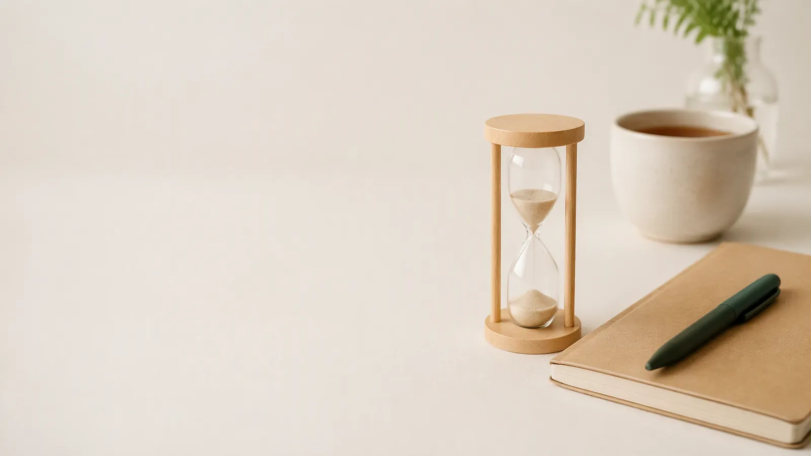
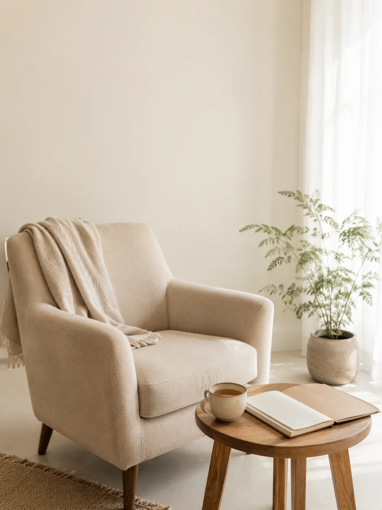

Психолог · онлайн и очно в [Город]
Психолог с планом, а не «поговорили и разошлись»
Первая сессия-знакомство – 50 минут: разберём запрос, составлю план на 8 недель и назову цену до оплаты.
- Первая сессия-знакомство – [Цена первой сессии] ₽, перед оплатой пакета
- План на 8 недель: видно, что меняется и когда
- Цена за сессию или пакет – известна заранее
Почему бросают терапию
Без плана сессия – это «поговорили и разошлись»
Через месяц непонятно, что изменилось, и бросают. Поэтому порядок такой: знакомство, план на 8 недель по этапам, и только потом оплата.
Три запроса, с которыми приходят
План зависит от запроса, а не от методички. На первой сессии выясняем, какой из трёх ваш, и от него считаем недели.
- Тревога и панические атакиУменьшить градус, найти триггеры, вернуть спокойные утра и нормальный сон.
- ВыгораниеВосстановить ресурс, разобраться с границами, вернуть интерес к работе без «через не могу».
- Отношения и самооценкаПерестать ходить по одному кругу, выстроить границы, научиться слышать себя, а не только других.
План на 8 недель, а не абонемент на «поговорить»
После первой сессии вы получаете дневник: четыре этапа по две недели, что делаем на встречах и что между ними. Вот он, страница за страницей.
- Недели 1–2Знакомство и запрос
- Недели 3–4Главная тема
- Недели 5–6Практика в жизни
- Недели 7–8Итог и опора на себя
Каждые две недели – короткий итог: что изменилось, что дорабатываем. Вы видите план целиком, а не «поработаем над этим».
50 минут по минутам
Каждая встреча идёт по одной схеме: вы знаете, что будет, и видите, что изменилось.
Записаться на сессию
0–5 минут
Как прошла неделя
Что получилось, что было трудно. Замечаем изменения, а не спешим дальше.
Вы: видите, что сдвигается уже с первых недель.
5–25 минут
Главная тема
Работаем с вашим запросом: метод под задачу, а не разговор «обо всём». Одна тема за сессию.
Вы: уходите с одним ясным шагом, а не с десятью советами.
25–40 минут
Практика и техники
Пробуем техники здесь и сейчас: дыхание, работа с мыслями, границы. То, что работает именно у вас.
Вы: оставляете сессию с инструментом, а не только с пониманием.
40–50 минут
Итог и практика дома
Что берём между сессиями: короткая практика на 15 минут в день. Маленькие шаги вместо «перевернуть жизнь».
Вы: изменения происходят в жизни, а не только на сессии.
Цена за сессию или пакет – до оплаты
Онлайн или очно, одна цена. Пакет – это ровно план на 8 недель, платить за «поговорить» не придётся.
- Онлайн – видеосвязь в удобное время, очно – [Адрес кабинета]
- Оплата за сессию или пакетом, пакет действует 10 недель
- Перенос за 24 часа – без потери сессии
Первая сессия-знакомство
50 минут[Цена] ₽Знакомство, запрос и первый план. Если не подошло, просто не продолжаем.
Разовая сессия
50 минут[Цена] ₽Онлайн или очно. Оплата после сессии, перенос за 24 часа – без потери.
Пакет 8 сессий
8 × 50 минут[Цена] ₽План на 8 недель: одна встреча в неделю, итог каждые две недели. Сессия в пакете дешевле разовой.
Пакет 16 сессий
16 × 50 минут[Цена] ₽Две встречи в неделю: глубокая работа или сжатые сроки.
Парная сессия
80 минут[Цена] ₽Для пар: разобраться в конфликте, договориться о правилах, услышать друг друга.

Сначала слушаю, потом предлагаю план
Тревога, выгорание или отношения – от запроса зависит план, а не наоборот. Поэтому первая встреча – знакомство и диагностика, а не работа по шаблону.
Одна тема за сессию. Не пять. Запрос считается сдвинувшимся, когда вы видите изменения в жизни, а не только на встрече.
Между сессиями – короткая практика: 15 минут в день. Маленькие шаги вместо «перевернуть жизнь за неделю».
Три теста, чтобы начать с себя
Пройти – 3 минуты, без имени и почты. В конце – текстовый результат по вашим ответам и подсказка, с чем можно прийти на первую сессию.
- Насколько я выгорел?12 вопросов. Поймёте, усталость это или уже выгорание, и что с этим делать.
- Тревожность: что со мной?10 вопросов. Увидите свой уровень тревоги и первые шаги, которые реально помогают.
- Границы: умею ли я говорить «нет»?8 вопросов. Проверите, где вы отвечаете «да», хотя хочется «нет».
Начните с первой сессии
Напишите, что беспокоит: предложим время на ближайшие дни, проведём знакомство и вернёмся с планом на 8 недель и ценой.